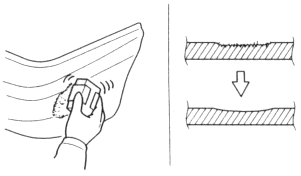
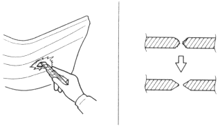
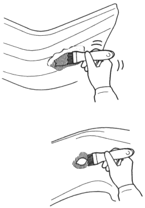

- Sanding
Sand the damage area flat and smooth.
Shallow Scratch:
| Use a flexible block and #240~#400~#600 sandpaper. |

Hole/Deep Gouge:
Cut out and make any torn or burred area flat.
| Use a knife, flexible block and #180~#240 sandpapers. |

- Air blowing/degreasing
Clean the damaged area thoroughly.Use alcohol, and wax and grease remover.
- Spraying primer
Primer is used to fill cavities in the putty and primer surfacer.
- Spray primer on the exposed area.
- Spray the 2~3 coats of primer on 2~3 coats over the area you applied putty.
- Apply primer to the back of the bumper if the damage is a tear or hole.
|

Drying
NOTE: Take care not to let the heat lamp deform the bumper during the drying process.
Dry the bumper primer thoroughly with an infrared dryer or other suitable method.
Drying Time:
| Air dry 20°C (68°F) | 20 minutes |
| Force dry 60°C (140°F) | 10 minutes |